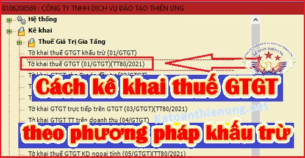

Hướng dẫn cách kê khai thuế GTGT theo phương pháp khấu trừ: Điều kiện áp dụng phương pháp khấu trừ thuế GTGT; Mẫu tờ khai thuế GTGT theo phương pháp khấu trừ mới nhất.
1. Điều kiện áp dụng phương pháp khấu trừ thuế GTGT:
- Có 2 đối tượng như sau:
(1) là Đối tượng kê khai thuế GTGT theo phương pháp khấu trừ.
(2) là Đối tượng đăng ký tự nguyện áp dụng phương pháp khấu trừ.
------------------------------------------------------------------------
a, Đối tượng áp dụng phương pháp khấu trừ thuế GTGT:
Theo khoản 2 điều 11 của Luật thuế GTGT số 48/2024/QH15 có hiệu lực từ ngày 01/7/2025 thì:
Điều 11. Phương pháp khấu trừ thuế
2. Phương pháp khấu trừ thuế áp dụng đối với cơ sở kinh doanh thực hiện đầy đủ chế độ kế toán, hóa đơn, chứng từ theo quy định của pháp luật về kế toán, hóa đơn, chứng từ bao gồm:
a) Cơ sở kinh doanh có doanh thu hằng năm từ bán hàng hóa, cung cấp dịch vụ từ 01 tỷ đồng trở lên, trừ hộ, cá nhân sản xuất, kinh doanh;
b) Cơ sở kinh doanh tự nguyện áp dụng phương pháp khấu trừ thuế, trừ hộ, cá nhân sản xuất, kinh doanh;
c) Tổ chức, cá nhân nước ngoài cung cấp hàng hóa, dịch vụ để tiến hành hoạt động tìm kiếm thăm dò, phát triển mỏ dầu khí và khai thác dầu khí nộp thuế theo phương pháp khấu trừ thuế do bên Việt Nam kê khai, khấu trừ, nộp thay.
Hiện nay, chính phủ đang quy định chi tiết đối tượng áp dụng phương pháp khấu trừ thuế GTGT tại điều 21 của Nghị định 181/2025/NĐ-CP có hiệu lực từ ngày 01/07/2025 như sau:
Điều 21. Đối tượng áp dụng phương pháp khấu trừ thuế
Phương pháp khấu trừ thuế áp dụng đối với cơ sở kinh doanh thực hiện đầy đủ chế độ kế toán, hóa đơn, chứng từ theo quy định của pháp luật về kế toán, hóa đơn, chứng từ bao gồm:
1. Cơ sở kinh doanh có doanh thu hằng năm từ bán hàng hóa, cung cấp dịch vụ từ 01 tỷ đồng trở lên, trừ hộ, cá nhân sản xuất, kinh doanh. Trong đó:
a) Doanh thu hằng năm do cơ sở kinh doanh tự xác định căn cứ vào tổng cộng chỉ tiêu “Tổng doanh thu của hàng hóa, dịch vụ bán ra chịu thuế giá trị gia tăng” trên Tờ khai thuế giá trị gia tăng tháng của kỳ tính thuế từ tháng 11 năm trước đến hết kỳ tính thuế tháng 10 năm hiện tại, trước năm xác định phương pháp tính thuế giá trị gia tăng hoặc trên Tờ khai thuế giá trị gia tăng quý của kỳ tính thuế từ quý 4 năm trước đến hết kỳ tính thuế quý 3 năm hiện tại, trước năm xác định phương pháp tính thuế giá trị gia tăng. Thời gian áp dụng ổn định phương pháp tính thuế là 02 năm liên tục.
b) Trường hợp cơ sở kinh doanh mới thành lập trong năm và hoạt động sản xuất, kinh doanh trong năm không đủ 12 tháng thì xác định doanh thu ước tính của năm như sau: tổng cộng chỉ tiêu “Tổng doanh thu của hàng hóa, dịch vụ bán ra chịu thuế giá trị gia tăng” trên Tờ khai thuế giá trị gia tăng của kỳ tính thuế các tháng hoạt động sản xuất, kinh doanh chia (:) số tháng hoạt động sản xuất, kinh doanh và nhân với (x) 12 tháng. Trường hợp theo cách xác định như trên, doanh thu ước tính từ 01 tỷ đồng trở lên thì cơ sở kinh doanh áp dụng phương pháp khấu trừ thuế. Trường hợp doanh thu ước tính theo cách xác định trên chưa đến 01 tỷ đồng thì cơ sở kinh doanh áp dụng phương pháp tính trực tiếp theo doanh thu trong 02 năm, trừ trường hợp cơ sở kinh doanh đăng ký tự nguyện áp dụng phương pháp khấu trừ thuế.
c) Trường hợp cơ sở kinh doanh tạm nghỉ sản xuất, kinh doanh trong cả năm thì xác định theo doanh thu của năm trước năm tạm nghỉ sản xuất, kinh doanh. Đối với cơ sở kinh doanh tạm nghỉ sản xuất, kinh doanh một thời gian trong năm hoặc năm trước thì xác định doanh thu theo số tháng, quý thực sản xuất, kinh doanh như trường hợp hoạt động sản xuất, kinh doanh không đủ 12 tháng nêu tại điểm b khoản này.
2. Cơ sở kinh doanh tự nguyện áp dụng phương pháp khấu trừ thuế, trừ hộ, cá nhân sản xuất, kinh doanh. Trong đó:
a) Doanh nghiệp, hợp tác xã, liên hiệp hợp tác xã đang hoạt động có doanh thu hằng năm từ bán hàng hóa, cung cấp dịch vụ chịu thuế giá trị gia tăng dưới 01 tỷ đồng đã thực hiện đầy đủ chế độ kế toán, sổ sách, hóa đơn, chứng từ theo quy định của pháp luật về kế toán, hóa đơn, chứng từ.
b) Doanh nghiệp mới thành lập từ dự án đầu tư của cơ sở kinh doanh đang hoạt động nộp thuế giá trị gia tăng theo phương pháp khấu trừ thuế.
c) Doanh nghiệp mới thành lập có thực hiện đầu tư theo dự án đầu tư được cấp có thẩm quyền phê duyệt thuộc trường hợp đăng ký tự nguyện áp dụng phương pháp khấu trừ thuế.
d) Doanh nghiệp, hợp tác xã, liên hiệp hợp tác xã mới thành lập có dự án đầu tư không thuộc đối tượng được cấp có thẩm quyền phê duyệt theo quy định của pháp luật về đầu tư nhưng có phương án đầu tư được người có thẩm quyền của doanh nghiệp ra quyết định đầu tư phê duyệt thuộc đối tượng đăng ký áp dụng phương pháp khấu trừ thuế.
đ) Doanh nghiệp, hợp tác xã, liên hiệp hợp tác xã mới thành lập có thực hiện đầu tư, mua sắm, nhận góp vốn bằng tài sản cố định, máy móc, thiết bị, công cụ, dụng cụ hoặc có hợp đồng thuê địa điểm kinh doanh.
e) Tổ chức nước ngoài có cơ sở thường trú tại Việt Nam, cá nhân ở nước ngoài là đối tượng cư trú tại Việt Nam có doanh thu phát sinh tại Việt Nam.
g) Tổ chức kinh tế khác hạch toán được thuế giá trị gia tăng đầu vào, đầu ra, không bao gồm doanh nghiệp, hợp tác xã, liên hiệp hợp tác xã.
3. Tổ chức, cá nhân nước ngoài cung cấp hàng hóa, dịch vụ để tiến hành hoạt động tìm kiếm thăm dò, phát triển mỏ dầu khí và khai thác dầu khí nộp thuế theo phương pháp khấu trừ thuế do bên Việt Nam kê khai, khấu trừ, nộp thay.
4. Chi nhánh mới thành lập của doanh nghiệp đang nộp thuế giá trị gia tăng theo phương pháp khấu trừ thuế (bao gồm cả chi nhánh được thành lập từ dự án đầu tư của doanh nghiệp) thuộc trường hợp khai thuế giá trị gia tăng riêng theo quy định của pháp luật về quản lý thuế thì xác định phương pháp tính thuế của chi nhánh theo phương pháp tính thuế của doanh nghiệp đang hoạt động.
------------------------------------------------------------------
2. Hồ sơ khai thuế GTGT theo phương pháp khấu trừ:
- Tờ khai thuế giá trị gia tăng mẫu 01/GTGT ban hành theo thông tư 80/2021/TT-BTC
-------------------------------------------------------------------------------------------
3. Thời hạn nộp tờ khai thuế GTGT theo phương pháp khấu trừ:
Căn cứ theo quy định tại Điều 44 Luật quản lý thuế 38/2019/QH14:
a) Hạn nộp tờ khai thuế GTGT theo tháng:
- Chậm nhất là ngày thứ 20 của tháng tiếp theo tháng phát sinh nghĩa vụ thuế đối với trường hợp khai và nộp theo tháng;
Ví dụ: Hạn nộp Tờ khai thuế GTGT tháng 9/2025 là ngày 20/10/2025
b) Hạn nộp tờ khai thuế GTGT theo quý:
- Chậm nhất là ngày cuối cùng của tháng đầu của quý tiếp theo quý phát sinh nghĩa vụ thuế đối với trường hợp khai và nộp theo quý.
Ví dụ: Hạn nộp Tờ khai thuế GTGT Qúy 3/2025 là ngày 31/10/2025.
Chú ý:
- Trong tháng/Qúy dù không phát sinh các bạn vẫn phải nộp Tờ khai thuế GTGT tháng/quý đó nhé. (Không nộp sẽ bị phạt tội chậm nộp Tờ khai thuế).
Xem thêm:► Mức phạt chậm nộp Tờ khai thuế GTGT
- Thời hạn nộp tờ khai cũng là thời hạn nộp tiền thuế (Nghĩa là: Sau khi nộp Tờ khai thuế GTGT xong -> Nếu trên tờ khai có phát sinh tiền thuế GTGT phải nộp -> Thì nộp ngay số Tiền thuế GTGT đó cũng theo hạn như trên).
Xem thêm:► Mức phạt chậm nộp tiền thuế GTGT
-----------------------------------------------------------------
Kế toán Diệu Tâm chúc các bạn thành công!
Bạn muốn học cách kê khai thuế tháng/quý, cách xác định chi phí được trừ - không được trừ, cách lập tờ khai Quyết toán thuế cuối năm ...
Có thể tham gia: Khóa học thực hành kế toán thuế thực tế chuyên sâu.
Bạn muốn học cách kê khai thuế tháng/quý, cách xác định chi phí được trừ - không được trừ, cách lập tờ khai Quyết toán thuế cuối năm ...
Có thể tham gia: Khóa học thực hành kế toán thuế thực tế chuyên sâu.
---------------------------------------------------------------------------
